Gap Check
Paste a plan or policy. It looks for recognized risk and safeguard phrases and reports a risk named with no control present. Try the built-in example first.
Every instrument, reference, simulation, experiment, skill and method document, grouped by what it does. Each entry states its limits.
Deterministic browser tools. Fixed rules and versioned word lists, no model at runtime. Results are questions to review; a clean result does not certify correctness or safety. Everyday wording can be missed.
Paste a plan or policy. It looks for recognized risk and safeguard phrases and reports a risk named with no control present. Try the built-in example first.
Paste an agent action log or decision trace. It highlights wording about a goal climbing over a rule, or a check being bypassed. Lexicon version shown in the tool.
Scores each part of a framework or plan on coherence and resilience dimensions: does it say what to do, can you tell if it worked, does it serve the goal, does it say what happens on failure.
A five-question work-handover check, plus the same engines pointed at an operations manual: risks with no stated control and single points of failure with no documented backup. Arrangements remain not verified.
Guided input for Gap Check or Framework Audit, for a read in about a minute.
The same Gap Check and Tracer engines as a zero-dependency Node script with JSON output and explicit exit codes, for use in a pipeline.
The governance framework walked top to bottom. Source: the v0.1 public specification and the earlier State-Delta Bridge.
Trace every precise number, digest, byte count and version in a document back to an artifact under a root you name. Python 3, standard library, no network.
The one-minute form of the OpenMirror method. Six fields, run on one paragraph before accepting it as true. Ends in accept, not yet, or a named uncertainty.
Separate calibration, consequence, evidence, integrity, privacy and activity. This guide reports no current system status.
The theory corpus behind the instruments. Each page says what the paper is, what it means, how it functions, and its exact status. Status words are the document's own; none is upgraded here.
The working version of the protocol, PROPOSED and under owner review. Five guarantees, each with what it does and does not cover. STP v1.1 remains the formal baseline.
The formal baseline and the source of the five STP figures. One consequence path, from PROPOSE to CORRECT, with a separate receipt for each control function.
A design brief for a caching library that reuses saved work but rechecks access on every request. Local timings, not production traffic.
The research ledger. What was tried, what failed, and what replaced it, with every claim area labelled IMPLEMENTED, TESTED, PROPOSED, or UNKNOWN.
The note behind Pin-Check. In the first run, the label that was correct every time was never used. Includes a ten-minute check for your own labels.
The evidence review. Each component gets its own evidence boundary, so a pass in one cannot silently validate another. Negative results are retained.
The working paper, owner-review draft v4. The typed boundary proposal, with each result marked TESTED, OBSERVED, PROPOSED, or OPEN.
The plain-language blueprint. Keep only what is currently true, check new information against reality, and set aside what cannot be verified. Start here if you are new.
Select a figure to enlarge it. Every caption states what the figure shows and what it does not prove.
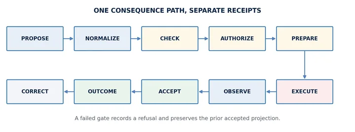
STP v1.1, Figure 1: One consequence path, separate receipts. The ten-stage consequence path, from PROPOSE to CORRECT, in which each control function emits its own receipt and a failed gate records a refusal and preserves the prior accepted projection. The diagram draws the forward path only; it does not show that any implementation follows it.
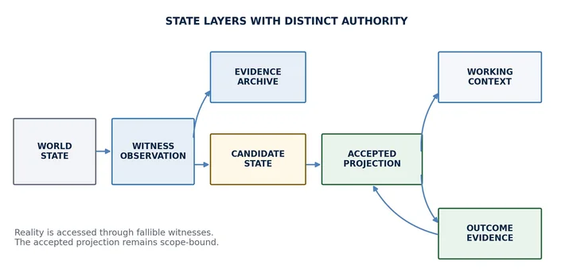
STP v1.1, Figure 2: State layers with distinct authority. World state is reached only through witness observations; observations, candidate state, and the accepted projection are kept as separate records. Reality is accessed through fallible witnesses, and the accepted projection remains scope-bound: it is not a claim about external truth.
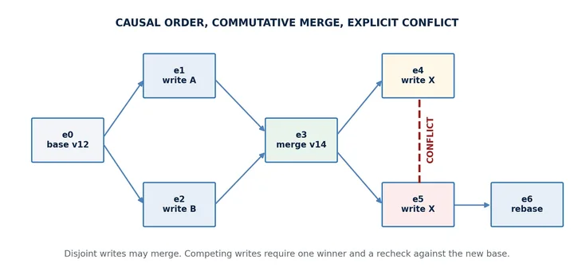
STP v1.1, Figure 3: Causal order, commutative merge, explicit conflict. Disjoint writes may merge. Competing writes produce an explicit conflict: one write wins, and the other is rechecked against the new base. The figure illustrates the protocol's conflict rule; it does not show that any implementation loses no updates.
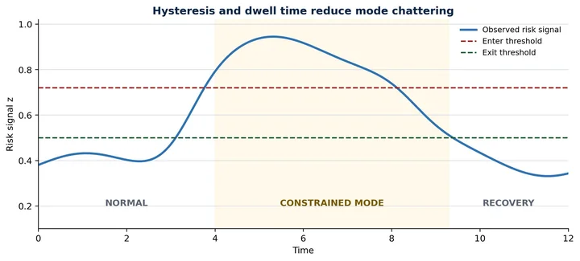
STP v1.1, Figure 4: Hysteresis and dwell time reduce mode chattering. Separate enter and exit thresholds, with a declared dwell time, reduce rapid switching between operating modes. The curve is illustrative and unitless, not measured data. It shows a smooth signal and does not show chattering being prevented on a noisy one.
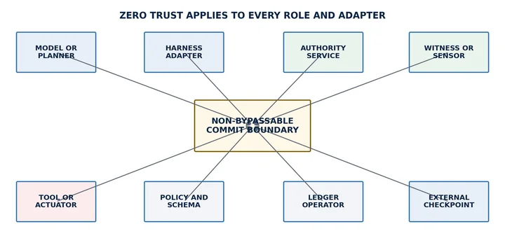
STP v1.1, Figure 5: Zero trust applies to every role and adapter. No role, including the ledger operator and the authority service itself, bypasses the commit boundary. This is a design requirement drawn as a diagram; it does not show that any deployment enforces it.
V=IR: The alignment crosswalk (final, accepted 2026-09-14). V is authority, I is the flow of effects, and R is the gate, across five regimes from short circuit to open circuit. A crosswalk with a stated claim frame, read correspondence by correspondence, not an empirically validated law.
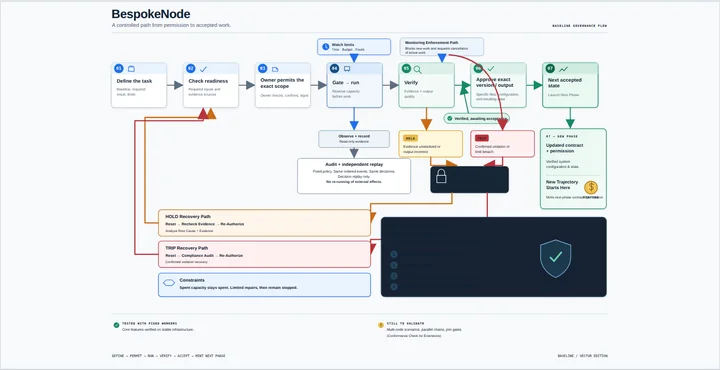
BespokeNode framework diagram. The permission-to-accepted-work lifecycle and its two safety states, HOLD and TRIP, each with a distinct recovery path. By the diagram's own notes, core features were tested with fixed workers; multi-node scenarios, parallel chains, and join gates are not yet validated.
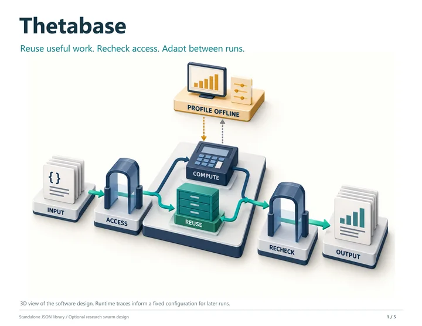
Thetabase, page 1 of 5: Reuse useful work. Recheck access. Adapt between runs. The system flow: access check, compute or reuse, recheck, output, with offline profiling setting a fixed configuration for later runs. A design illustration from a design brief, not production evidence.
Thetabase, page 2 of 5: What gets optimized. Whole-job reuse by default, stage reuse only where measurements justify it, shown with a synthetic two-order example. The example shows the mechanism, not a performance result.
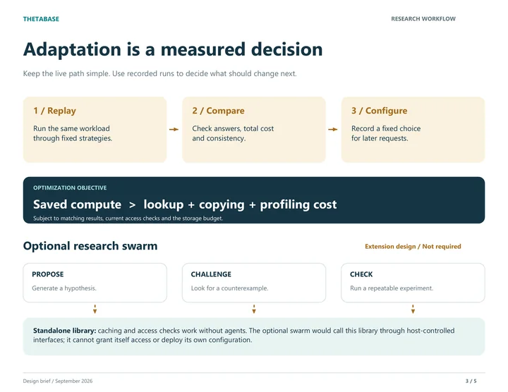
Thetabase, page 3 of 5: Adaptation is a measured decision. Replay, Compare, Configure: the configuration changes only offline, from recorded runs, and is then fixed for later requests. A design brief page, not production evidence. An optional research swarm is shown as extension design; it is not required and not evaluated here.
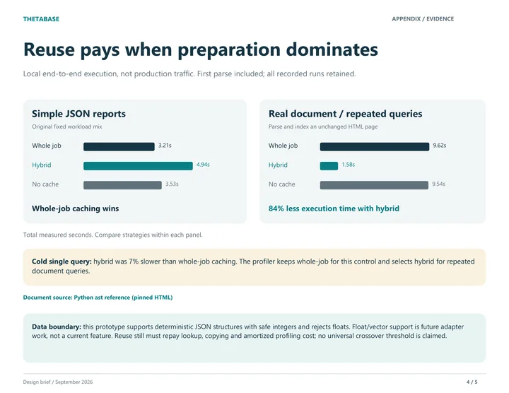
Thetabase, page 4 of 5: Reuse pays when preparation dominates. Local end-to-end timings on two workloads: whole-job caching was fastest on simple JSON reports, and hybrid stage reuse was fastest on repeated queries over one pinned HTML document. Local measurements, not production evidence; no general crossover point is claimed.
Thetabase, page 5 of 5: Use it. Measure it. Keep the receipts. Two reproduce commands and a five-line integration example in which the host supplies the access check. The kit the commands refer to is not published on this site, and the page states that its design influences do not establish novelty or production validation.
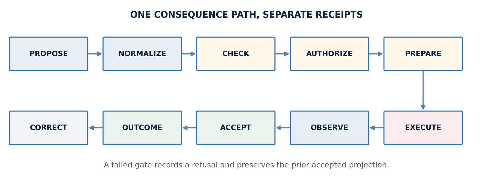
STP v1.1, Figure 1: One consequence path, separate receipts. The ten-stage consequence path, from PROPOSE to CORRECT, in which each control function emits its own receipt and a failed gate records a refusal and preserves the prior accepted projection. The diagram draws the forward path only; it does not show that any implementation follows it.
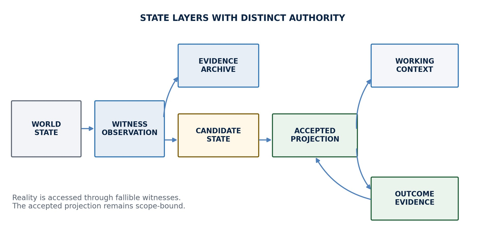
STP v1.1, Figure 2: State layers with distinct authority. World state is reached only through witness observations; observations, candidate state, and the accepted projection are kept as separate records. Reality is accessed through fallible witnesses, and the accepted projection remains scope-bound: it is not a claim about external truth.
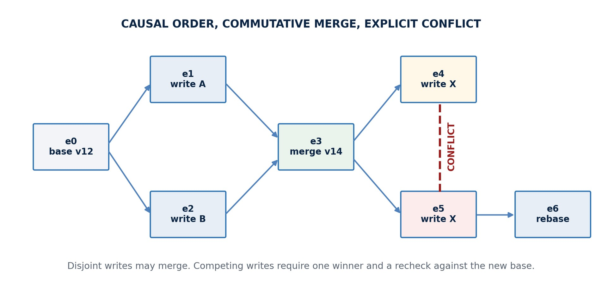
STP v1.1, Figure 3: Causal order, commutative merge, explicit conflict. Disjoint writes may merge. Competing writes produce an explicit conflict: one write wins, and the other is rechecked against the new base. The figure illustrates the protocol's conflict rule; it does not show that any implementation loses no updates.
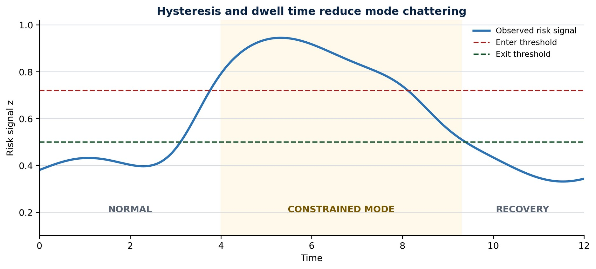
STP v1.1, Figure 4: Hysteresis and dwell time reduce mode chattering. Separate enter and exit thresholds, with a declared dwell time, reduce rapid switching between operating modes. The curve is illustrative and unitless, not measured data. It shows a smooth signal and does not show chattering being prevented on a noisy one.
STP v1.1, Figure 5: Zero trust applies to every role and adapter. No role, including the ledger operator and the authority service itself, bypasses the commit boundary. This is a design requirement drawn as a diagram; it does not show that any deployment enforces it.
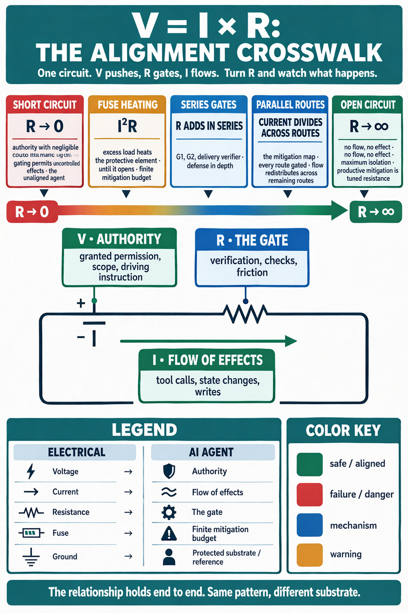
V=IR: The alignment crosswalk (final, accepted 2026-09-14). V is authority, I is the flow of effects, and R is the gate, across five regimes from short circuit to open circuit. A crosswalk with a stated claim frame, read correspondence by correspondence, not an empirically validated law.
BespokeNode framework diagram. The permission-to-accepted-work lifecycle and its two safety states, HOLD and TRIP, each with a distinct recovery path. By the diagram's own notes, core features were tested with fixed workers; multi-node scenarios, parallel chains, and join gates are not yet validated.
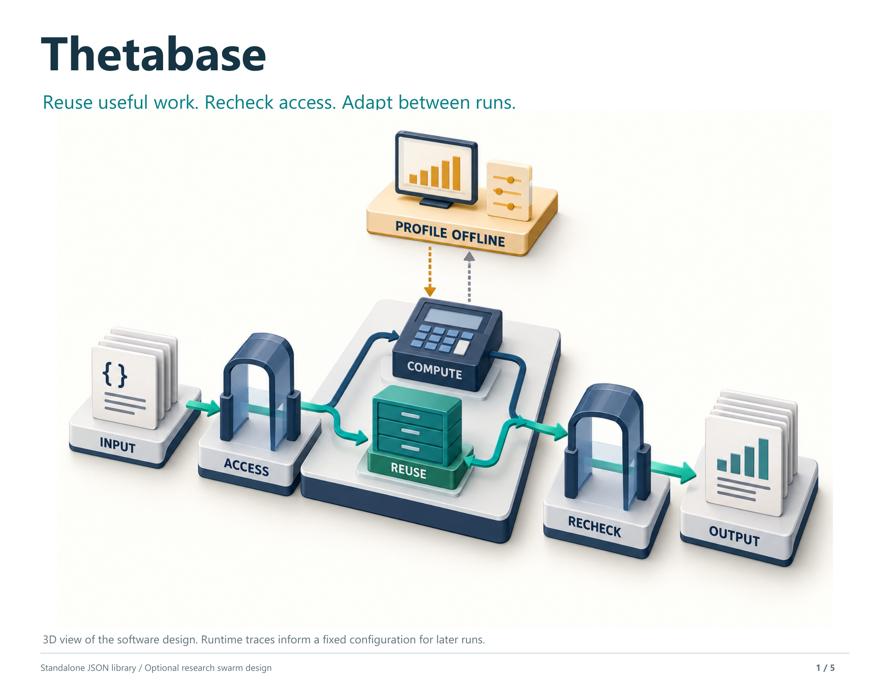
Thetabase, page 1 of 5: Reuse useful work. Recheck access. Adapt between runs. The system flow: access check, compute or reuse, recheck, output, with offline profiling setting a fixed configuration for later runs. A design illustration from a design brief, not production evidence.
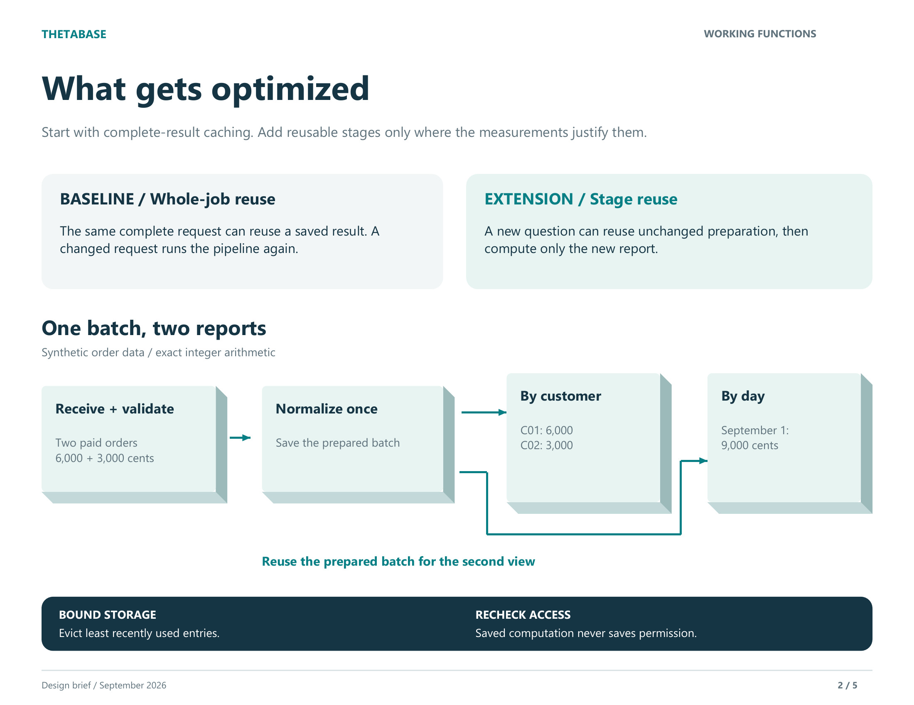
Thetabase, page 2 of 5: What gets optimized. Whole-job reuse by default, stage reuse only where measurements justify it, shown with a synthetic two-order example. The example shows the mechanism, not a performance result.
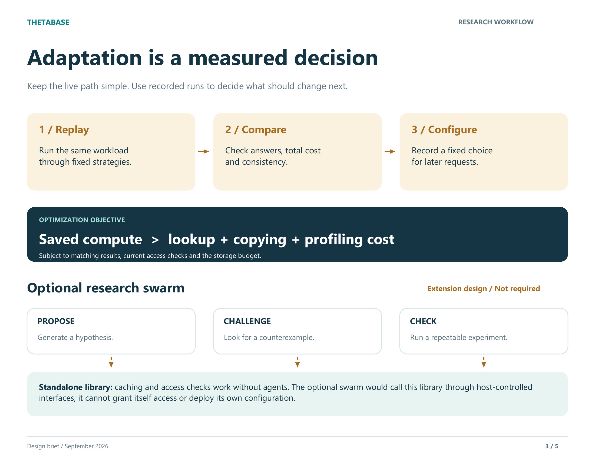
Thetabase, page 3 of 5: Adaptation is a measured decision. Replay, Compare, Configure: the configuration changes only offline, from recorded runs, and is then fixed for later requests. A design brief page, not production evidence. An optional research swarm is shown as extension design; it is not required and not evaluated here.
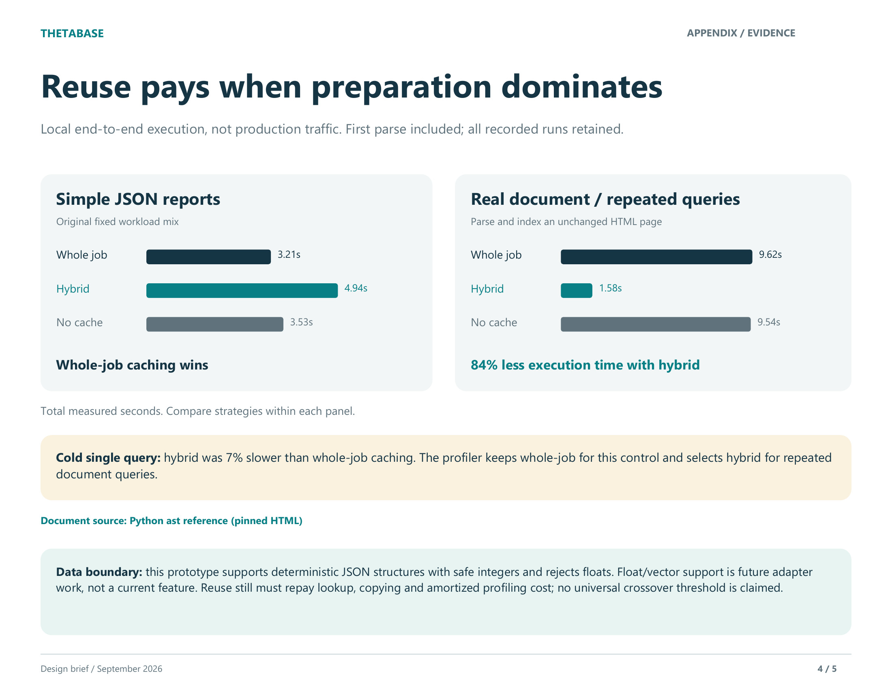
Thetabase, page 4 of 5: Reuse pays when preparation dominates. Local end-to-end timings on two workloads: whole-job caching was fastest on simple JSON reports, and hybrid stage reuse was fastest on repeated queries over one pinned HTML document. Local measurements, not production evidence; no general crossover point is claimed.
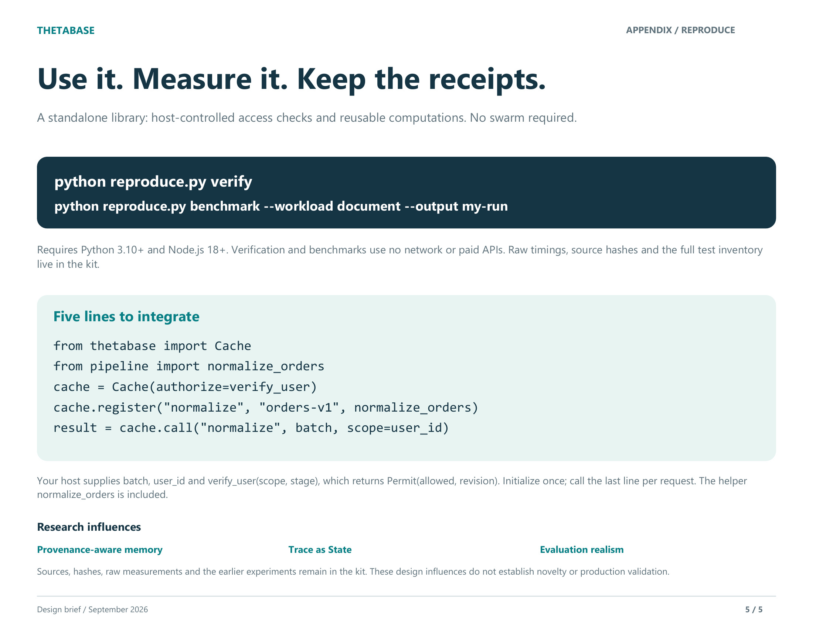
Thetabase, page 5 of 5: Use it. Measure it. Keep the receipts. Two reproduce commands and a five-line integration example in which the host supplies the access check. The kit the commands refer to is not published on this site, and the page states that its design influences do not establish novelty or production validation.
Type a question to retrieve a recorded definition and its sources. Fixed browser code searches the glossary.
Browse the 435-term embedded snapshot by area, function or relationship.
Open Explore and choose an area →Browse 160 recorded cross-domain primitives and compare how a pattern is used in different fields.
A short introduction to the tools. Also see How it works and the guided technical review.
Explore return speed and the size of a disturbance a modeled system can absorb. Its signals are conditional indicators, not diagnoses for every real system.
Explore how monitoring intervals may affect a process. The analogy is a design hypothesis, not a transferred law.
Interact with a vocabulary graph through motion and sound. A visual experiment for exploration.
Inspect source coverage and entries in an older 435-term snapshot. It is a worklist for examining recorded support.
Review candidate entries and export a checked batch for the repository's verification script.